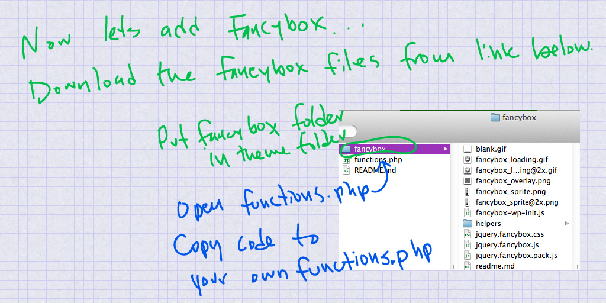
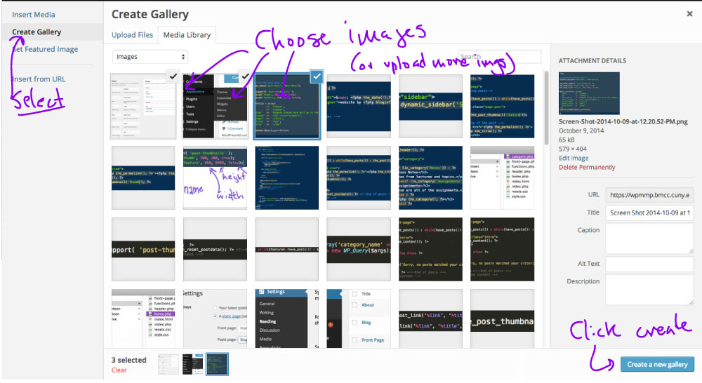
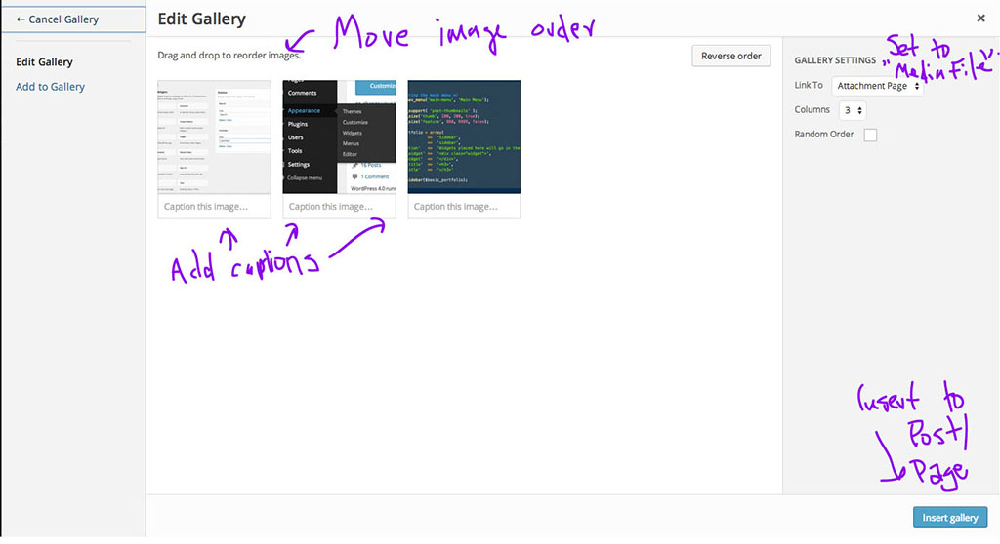
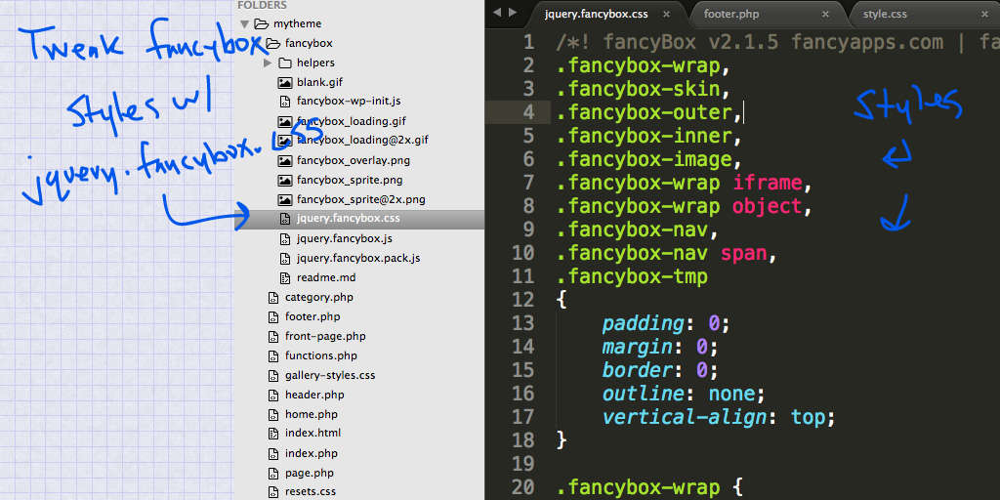

Today we’re going to add a gallery with Fancybox to the portfolio.
This exampled was modified by Professor Stein from this tutorial.
Start by adding the fancybox folder to your theme and update functions.php with the code found in the file that comes with the fancybox download:
function add_fancybox() {
wp_enqueue_script( 'fancybox-js', get_template_directory_uri() . '/fancybox/jquery.fancybox.pack.js', array( 'jquery' ), false, true );
wp_enqueue_style( 'fancybox-style', get_template_directory_uri() . '/fancybox/jquery.fancybox.css' );
//this is our code that sets up fancybox to use in WP
wp_enqueue_script( 'fancybox-wp-init', get_template_directory_uri() . '/fancybox/fancybox-wp-init.js', array( 'fancybox-js' ), false, true );
//this lets you see other images as thumbs
wp_enqueue_script( 'fancybox-thumbs', get_template_directory_uri() . '/fancybox/helpers/jquery.fancybox-thumbs.js', array( 'fancybox-js' ), false, true );
wp_enqueue_style( 'fancybox-style-thumbs', get_template_directory_uri() . '/fancybox/helpers/jquery.fancybox-thumbs.css', array('fancybox-style') );
}
add_action( 'wp_enqueue_scripts', 'add_fancybox' );To load that code into the single.php template, add this line to the bottom of the page:
<?php wp_footer(); ?>Now we need to add an image gallery in the WordPress Dashboard. Choose one of your project posts and then click Add Media:
Click Create Gallery and then choose the image you want to use in the gallery:
In Edit Gallery change the order of images and write captions, also set the Link To attribute to "Media File":
We can use the default classes and HTML structure created by the WordPress gallery to style the gallery, but first we need to turn off the default styles:
add_filter( 'use_default_gallery_style', '__return_false' );Then use the default CSS classes to your stylesheet:
/* the entire gallery */
.gallery {
}
/* each gallery item */
.gallery-item {
}
/* each image */
.gallery img {
}
/* each caption */
.gallery-caption {
}To edit the CSS basics of the fancybox popout display, edit the original fancybox files:
